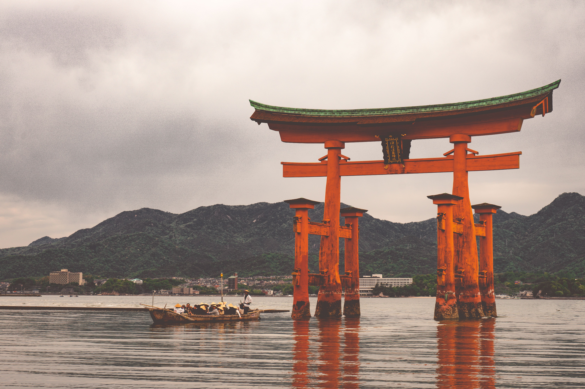
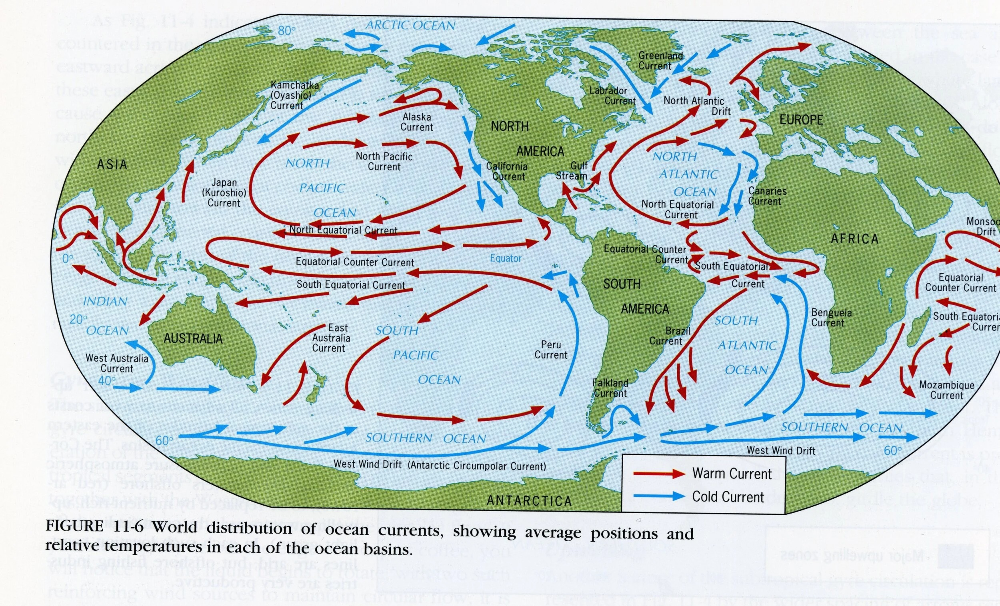
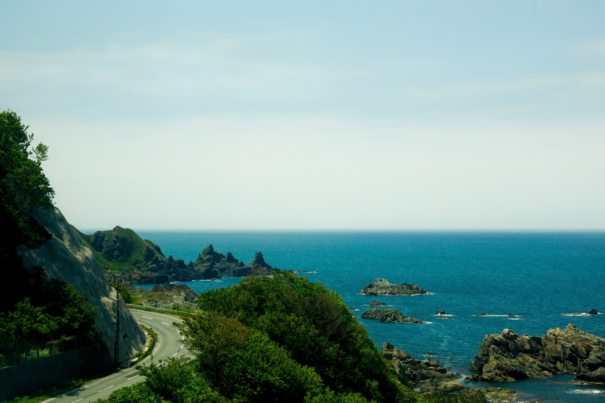
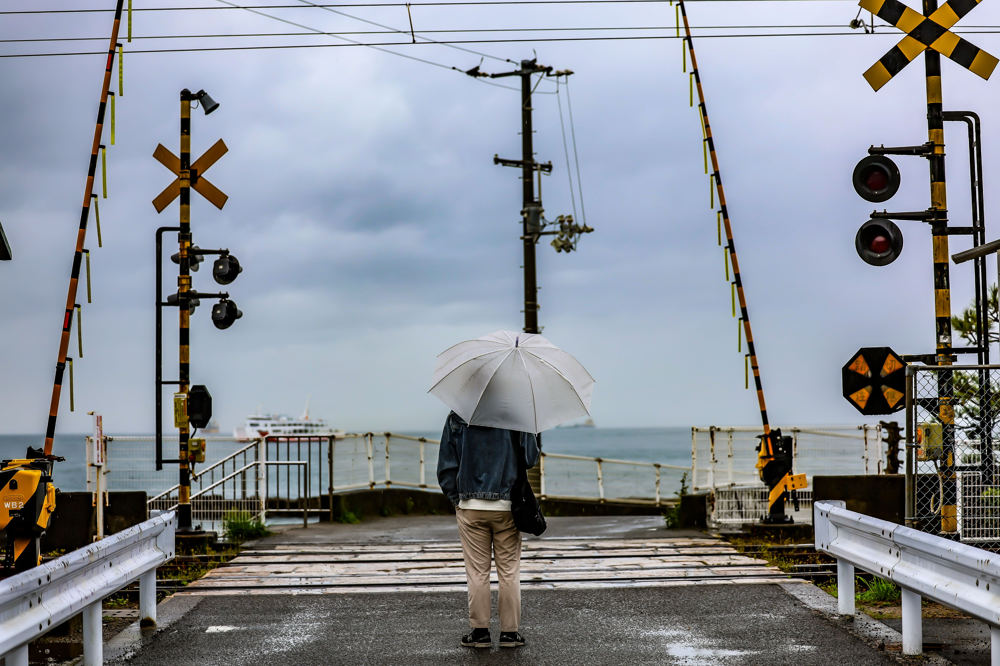

Japan is an island, or rather an archipelago. As magical and technologically advanced as you might see it, it has closer ties to Hawaii than to the larger landmasses such as North and South America, Europe, Asia, and Africa. This detail is important to note, given that Okinawa, Japan, averages around 7.8 typhoons that approach the island each year. Areas like Kyushu, Shikoku, Tokyo, Kyoto, and Osaka also face precarious conditions (Self Guide Japan, 2026). This large amount of water surrounding and flowing through Japan is nothing to scoff at; this same water often caused the collapse of Japanese villages, towns, and lives. While Japan has made countless efforts to ensure the country is as safe and prepared as possible, water remains uncertain, unpredictable, and necessary for our everyday lives.
Due to the proximity to the sea, Japan has an annual rainy season, known as tsuyu (梅雨) or "plum rain", that lasts from early May to late July (japan-guide.com, 2025), with a Typhoon season starting in June and lasting until October (Self Guide Japan, 2026). Due to this increase in water and Japan's already water-saturated land, floods are to be expected and have historically caused many disasters, as seen with the Tone River. Most notably, the 1957 Isahaya floods reached a height of 3.50 meters. This would soon cause the people of Japan to reconsider how to divert the water more effectively (Wikipedia contributors, 2026b). The video featured below tells of the Saitama anti-flood system, going into more depth about its features and how it works to divert that water into the Ado River (Timestamp: 14:12 - 18:24)
Engineering Tokyo's Future: Defenses Against Disaster
Note. Screenshot from Engineering Tokyo's future: Defenses against disaster [Video, 14:12], by SLICE EARTH, n.d., YouTube (https://www.youtube.com/watch?v=IHHOan7Z5D0).Depicts Tokyo's disaster-mitigation engineering, including Saitama's underground flood-diversion cavern and seismic building dampers.
Historically, Japan was a closed-off country. This was the case until around the 1850s, during the late Edo period. Most of Japan's trade was done inland through river networks. This was especially prevalent in the aforementioned Tone River during the Meiji Restoration (1868 - 1889), when Japan did not have trains and other modernized transport; "the development and expansion of maritime coastal transportation and inland shipping routes, which had been developing since the Edo period, was pursued as an important policy for the time being" (The Ministry of Land, Infrastructure, Transport, and Tourism [MLIT], n.d.-a). While river transport was effective, enabling easy navigation and connecting shoreline villages, flooding remained a prevalent issue. This issue was less of a problem for the boatmen than for the villagers. During this time, Japan began trading with neighboring countries; this has only grown as more countries became independent, transportation became more reliable, and tradable resources expanded. Below is a graph of Japan's current growth, the world's growth, and GDP from imports and exports.
Japan Country Growth v/s World Growth v/s GDP Growth
Note. From Japan Trade Statistics:Japan Country Growth v/s World Growth v/s GDP Growth [Graph], by World Bank, n.d., World Integrated Trade Solution. (https://wits.worldbank.org/CountryProfile/en/JPN).Compares Japan's annual trade growth rate against global trade growth and Japan's overall GDP growth.
Map of Ocean Currents and Gyres

Note. Screenshot from Physical Geography of the Global Environment by H. J. de Blij and P. O. Muller, 1976, as reproduced in "Ocean Circulation," by M. James, September 16, 2021, Madeline James Writes (https://www.madelinejameswrites.com/blog/ocean-circulation).Depicts global surface ocean gyres, warm poleward currents (such as the Kuroshio Current), and cold equatorward currents (such as the Oyashio Current).
Above, in figure 3, is a map of the world's currents; Japan stands right in the path of the North Pacific Current. A current that connects Japan to America. Since this water is warm, this current creates the perfect environment for Typhoons. Additionally, Japan is a geographic archipelago, surrounded by water. However, the numerous beaches get quickly outshone by Japan's aggressive and sometimes colossal Tsunamis.
When it came to trade, Japan ran into some interesting issues when opening its borders, namely Pacific Islander and American whaling ships that would, for the most part, avoid mainland Japan, particularly Edo and its fortified regions. This left the islands surrounding Japan, the ones too small to see on Google Earth, vulnerable and open to becoming a second home to these whale hunters. The most interesting of these islands was the Bonin Islands, which became an entrepôt for whale hunters and seafarers alike around the 1840s. However, the Japanese on the mainland, observing this from afar, found it unsettling. Jonas Rüegg (2025) explores this story in his book The Kuroshio Frontier: Empire and Environment in the Making of Japan's Pacific. Below is a video of the author introducing the book and discussing some of the details.
How an Oceanic Current Shaped Modern Japan | Talk at the Library
Note. Screenshot from How an oceanic current shaped modern Japan | Talk at the library [Video, 00:00], by Asia Society, March 25, 2026, YouTube (https://www.youtube.com/watch?v=BHpccmiQGAo).Illustrates historian Jonas Rüegg's presentation on the Kuroshio and Oyashio currents, seasonal monsoon winds, and Japan's Pacific maritime history.
Figure 5

Note. From Scenic coastal road with rocky shoreline [Photograph], by G. Zi, October 29, 2026, Pexels (https://www.pexels.com/photo/scenic-coastal-road-with-rocky-shoreline-40629361/).In the public domain (Pexels License).
The island, or rather the archipelago of Japan, is surrounded by the Pacific Ocean and features many beaches. Most shores are rocky; some even have sand; the most interesting one is the Tottori coast, featuring dunes that formed in that same prefecture. These grains of sand are river sediment native to Japan, composed of granite from the Chugoku Range that, due to weathering, was carried down the Sendai River (tottorisanddunes.com, 2026). However, despite the magnificence of these coasts and beaches, weathering and human infrastructure make them prone to erosion. This is quite worrisome, since land in Japan is so precious. Many efforts to preserve their land through forestry have been underway and continue to be. Some of the forest methods used include landslide defense and prevention forests, navigation target security forests, rockfall prevention forests, tide damage protection forests, and flood prevention forests (Forestry Agency, n.d.). They aim to fortify the ground soil, strengthen the land, and retain the precious space they have left.
Rainy Day at the Railway Crossing in Matsuyama

Note. From Rainy day at the railway crossing in Matsuyama [Photograph], by W. J. Lee, April 15, 2026, Pexels (https://www.pexels.com/photo/rainy-day-at-the-railway-crossing-in-matsuyama-37097996/).In the public domain (Pexels License).
Fun Fact! Did you know "tsunami" is Japanese for "harbor wave"? 津 (tsu) means either harbor or port, with 波 (nami) meaning wave! Some may wonder, but you are probably aware that Japan experiences frequent seismic activity. This does not ring true for today alone; the reason we use the title "tsunami" is mainly Japan's "longest recorded history of tsunamis dating back to as early as 684 CE" (Wikipedia contributors, 2026a). Large disturbances in the water cause tsunamis, most often by earthquakes, but Typhoons can also trigger them. Because of this, Japan has the most structured emergency defenses against these disasters. Typhoons are the easiest to overcome due to their predictability; however, earthquakes and tsunami attacks occur on a case-by-case basis, often without warning. The waves are never far behind.
Japan's History of Deadly Earthquakes and Tsunamis
Note. Screenshot from Japan's history of deadly earthquakes and tsunamis [Video, 00:00], by Sky News, [January 1, 2024], YouTube. (https://www.youtube.com/watch?v=noH5O5wKerA).Depicts historical earthquake and tsunami impacts across Japan.